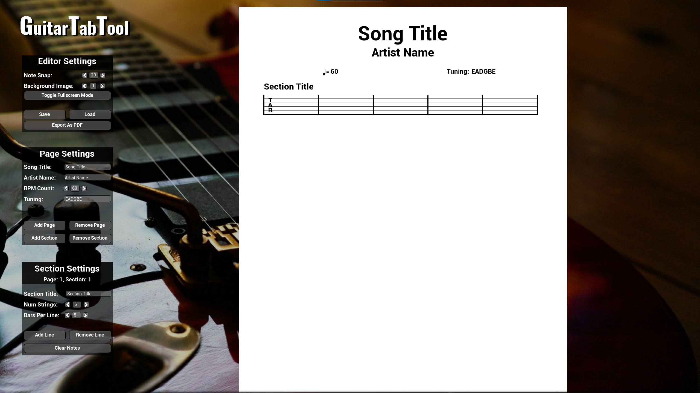
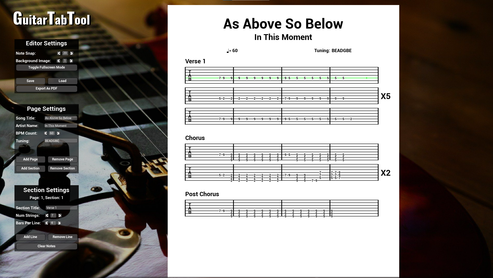
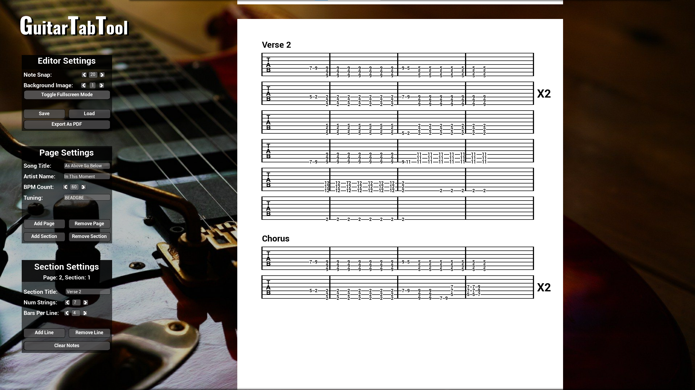
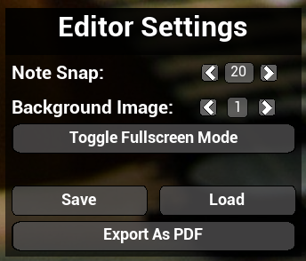
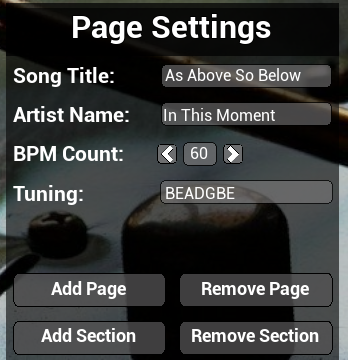
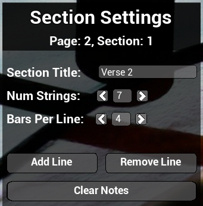

I started making this project while in my Year in Industry working for Lucid Games, where I was using Unreal Engine 4 and 5 constantly so got fairly good at it and C++. As I was working full time during the time I made this, I mostly worked on it at weekends and some evenings as C++ and UMG (Unreal Motion Graphics) practice and for my own use. I'm really pleased with how it has come out, as it has matched my initial idea of what it would be pretty perfectly, and it's really easy to use and make good looking and clear tab sheets which are great for learning guitar from. It isn't perfect, and could do with a rewrite now I am more experienced with C++ and Unreal Engine to be more modular and extensible. I haven't been very good at documenting the process of this project, but here are some pictures of the software.
The app loads straight onto a blank page with a title and artist section, BPM and tuning information, and a first section already added to the page. |
 |
|  | The app can save and load files saved as JSON files, and even export to PDF files. The main editor works by hovering over the stave and pressing numbers on the keyboard to set the tab note. Where the note is placed is indicated by the green circle on the highlighed line. You can also set a repeat number at the end of the line. |
Multiple pages can be added, with only the first page displaying the song information. |
 |
|  | The editor settings panel allows you to configure settings for the app, such as toggling fullscreen, saving, loading and exporting songs, and changing the background image. It also allows you to change the note snap, which changes the spacing between notes being placed on the staves. |
The page settings panel allows you to enter the song title, artist name, BPM and tuning of the song to be displayed on the title page. It also allows you to add and remove pages and sections from the document. |
 |
|  | The section settings panel allows you to separate different sections of a song with a title, and change the layout of the bars, and the number of strings, which would allow a song to have a bass guitar as well as a primary guitar in the same song, for example. You can also add and remove lines for the section, and clear all the notes in the section if you want to change a section completely without removing and re-adding the section and all the lines. |